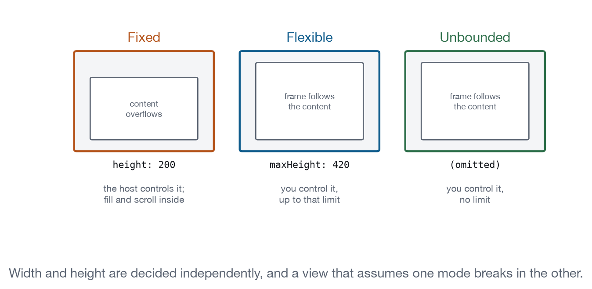

Chapter 6
Surfaces and Geometry
How to size your view, read the space you were given, go fullscreen, and ask to be closed. Most embedded layout bugs are in this chapter.
You do not own the rectangle you render into. The host decides how wide it is, whether it may grow, and when it stops existing, and it makes those decisions without ever seeing your content. Four capabilities cover that negotiation, and between them they account for most of what looks like a broken embedded application: a scrollbar inside a scrollbar, a view six pixels tall, a fullscreen button that does nothing.
How do I make the frame fit my content?
Send ui/notifications/size-changed whenever your content resizes. This is the only channel that exists for it. The host has rendered your HTML into an iframe it cannot read, so it knows the frame’s dimensions and nothing about what is inside; you know your content’s dimensions and nothing about the frame. Neither side can measure what the other has, and one notification closes that gap.
Extracted from from emulator/app-bridge.js
autoResize(element = document.documentElement) {
let last = { width: 0, height: 0 };
const report = () => {
const width = Math.ceil(element.scrollWidth);
const height = Math.ceil(element.scrollHeight);
if (width === last.width && height === last.height) return;
last = { width, height };
this.notify("ui/notifications/size-changed", { width, height });
};
new ResizeObserver(report).observe(element);
report();
return this;
}surface.resizeCoreLevel 1On the wireReport content size so the host can size the frame around it.
- Messages
ui/notifications/size-changedcontainerDimensions- Ground
- The MCP Apps extension defines a message for it.
- Recipes
- Data Explorer, Dashboard, Monitoring Console
- Demo
- lab-surface
The last comparison is the part that matters. A ResizeObserver fires during layout, and layout runs more often than content actually changes: a font loading, a scrollbar appearing, an image decoding, all of them produce a callback with dimensions identical to the previous one. Sending each of those turns a resize into a flood, and because the host resizes the frame on each message, the flood feeds itself. Comparing against the last reported size costs two integers and removes the whole class of problem. The SDK does the same thing when autoResize is left on, which it is by default, so unless you have a reason to hand-roll this you should not.
What the host owes you in return depends on which mode the dimension is in. If it is flexible, the host must listen and apply your size within a frame or two, because your content is the authority. If it is fixed, the host is entitled to ignore you completely, and your content has to fit or scroll inside itself.
How much room do I actually have?
Read hostContext.containerDimensions from the initialize result. Each axis is independently in one of three modes, and the field that is present tells you which:
| Field present | Mode | What you do |
|---|---|---|
height or width |
Fixed | Fill it. Scroll inside. |
maxHeight or maxWidth |
Flexible | Size yourself, up to the limit. |
| Neither | Unbounded | Size yourself. No limit. |
surface.viewportCoreLevel 1On the wireRead the space actually available: fixed, flexible, or unbounded.
- Messages
containerDimensionssafeAreaInsetsdeviceCapabilities- Ground
- The MCP Apps extension defines a message for it.
- Recipes
- Data Explorer, Dashboard
- Demo
- lab-surface
The two axes are decided separately and commonly differ. A fixed width with a flexible height is the standard inline card: the host has a column of known width in its conversation, and it will let your card be as tall as it needs within reason. A side panel is often the reverse. Writing code that assumes both axes match is writing code that works in one host.
Extracted from from apps/labs/lab-surface/index.html
function describe(dimensions) {
if (!dimensions) return "Unbounded in both directions.";
const axis = (fixed, max, name) =>
fixed != null ? `${name} is fixed at ${fixed}px`
: max != null ? `${name} is flexible up to ${max}px`
: `${name} is unbounded`;
return [
axis(dimensions.width, dimensions.maxWidth, "Width"),
axis(dimensions.height, dimensions.maxHeight, "Height"),
].join(". ") + ".";
}Guessing wrong is expensive in both directions. Assume fixed when the host gave you flexible and you build an inner scroller inside a frame that would happily have grown, so the user scrolls a 200-pixel window through 900 pixels of table for no reason. Assume flexible when the host gave you fixed and your content overflows a frame that will never move, so the bottom of your interface is simply gone. Press “Fix the height at 200px” in the demonstration and watch the view switch behaviour: it stops asking to grow and starts scrolling inside what it has.
Read the field in a function rather than in a constant at startup. Everything in hostContext can change through ui/notifications/host-context-changed, and a container change is one of the commonest: the user drags the divider on a side panel, or rotates a phone, or the host collapses its own sidebar. The same object also carries safeAreaInsets, platform and deviceCapabilities, which Chapter 12 covers.
WCAG’s Reflow criterion asks that content stay usable at 320 CSS pixels wide without two-dimensional scrolling, and a host on a phone will hand you close to that. It is worth testing at 320 deliberately rather than discovering it: most layouts that survive 380 also survive 320, and the ones that do not usually fail on a single fixed-width element you can find in a minute.

How do I go fullscreen?
Send ui/request-display-mode, and then use the mode that comes back rather than the one you asked for.
Illustrative, not run
const { mode } = await bridge.requestDisplayMode("fullscreen");
// mode may still be "inline". The host is allowed to say no.surface.displayModeCoreLevel 3On the wireMove between inline, fullscreen, and picture-in-picture.
- Messages
ui/request-display-modeavailableDisplayModesui/notifications/host-context-changed- Ground
- The MCP Apps extension defines a message for it.
- Recipes
- Dashboard, Image Annotator, Code and Diff Reviewer, Media Viewer
- Demo
- lab-surface
The negotiation has four steps. You declare which modes you support in appCapabilities.availableDisplayModes during initialisation. The host declares which it supports in hostContext.availableDisplayModes. You check its list before asking, because a host may refuse a mode purely on the grounds that you never declared it. And the host answers with the mode it actually set, which it may also change later, without being asked, through ui/notifications/host-context-changed.
Three of those four get skipped, and each produces a different failure. Assuming the request succeeded gives you an interface convinced it is fullscreen while sitting in a 380-pixel card, with controls sized for a screen it does not have. Asking for a mode you never declared gives you a refusal you did not plan for. Ignoring a change you did not request means the user presses the host’s own fullscreen control and your layout stays inline.
The rule that covers all three is to lay out for the mode you got, from a single function that reads hostContext.displayMode, called both after the request resolves and on every context change. Press “Withdraw fullscreen” in the demonstration and then press the view’s own button: the view checks the list, finds fullscreen gone, and says so rather than firing a request that would fail.
How do I close myself?
Send ui/notifications/request-teardown. It is a notification, so it has no id, gets no answer, and carries no guarantee: the host may act on it, defer it, or ignore it entirely, and you will not be told which.
surface.closeCoreLevel 2On the wireDraft onlyAsk the host to dismiss this view.
- Messages
ui/notifications/request-teardownui/resource-teardown- Ground
- The MCP Apps extension defines a message for it.
- Recipes
- Document Editor
- Demo
- lab-surface
If the host does agree, it sends you ui/resource-teardown, which is a request with an id and a reason, and it should wait for your response before removing the frame. That gap between the request arriving and your response leaving is the only interval in the entire protocol where a view is guaranteed to still exist and to have the host’s attention. Everything you were about to lose has to be flushed inside it, which is why Chapter 14 spends a whole section on what belongs there and how small it has to be.
Two host failures are worth knowing about because you cannot work around either. A host that removes the frame without sending ui/resource-teardown takes your unsaved work with it, and nothing in your code runs. A host that sends the request and does not wait for the answer looks identical from the inside: you begin your flush, the frame disappears mid-write, and no error is raised anywhere. The only defence against both is to keep the amount of unflushed state small at all times, which in practice means autosaving on a short timer rather than relying on the handshake.
Three geometry bugs
The six-pixel view. A frame that has just been appended has no layout yet, so the first ResizeObserver callback can report a height of zero or a handful of pixels. A host that believes it sets the frame to that height, and now the view has almost no viewport, so its content reflows to almost nothing, so the next report confirms the tiny size. The collapse is self-reinforcing and the view never recovers. Both sides have to be defensive: views send only positive sizes, and hosts treat a zero as “not yet” rather than as “empty”. This one survives manual testing, because the first frame on a page usually lays out before the observer fires and the second one does not.
The nested scrollbar. You set height: 100% on a container while the host gave you a flexible height. Now the container’s height is derived from the frame, and the frame’s height is derived from the container, and the two settle wherever the first measurement happened to land, which is usually too short. The user gets your scrollbar inside the host’s scrollbar. The rule that prevents it is narrow enough to remember: in a flexible dimension, nothing in the chain the observer measures may have a percentage size. Let content decide the height, and put the scroll on an inner element with an explicit max-height in pixels or rem.
The oscillating frame. A hover effect changes an element’s height by a few pixels. You report the new size, the host resizes the frame, the layout shifts, the pointer is now over a different element, the first element un-hovers, and you report again. The frame twitches for as long as the pointer sits near the boundary. Reserve the hovered dimensions up front and change only colour, border or shadow on hover.
Conformance checks
- A size reported in a flexible dimension resizes the frame within one animation frame.
- A reported size of zero does not collapse the frame.
containerDimensionsis in the initialize result and describes each axis independently.- A container change sends
ui/notifications/host-context-changedwith only the changed keys. ui/request-display-modereturns the resulting mode, and the host never switches a view to a mode absent from itsappCapabilities.ui/notifications/request-teardownis honoured withui/resource-teardownor ignored, never acted on silently.- The host waits for the teardown response before removing the frame.
What to remember
Both parties are guessing at the same number from opposite sides, and the protocol gives each of them exactly one way to tell the other what it knows: you send ui/notifications/size-changed, the host sends containerDimensions. Get those two right, keep percentage heights out of the measured chain, and treat every display mode answer as authoritative rather than as confirmation, and the layout problems in this chapter stop happening.